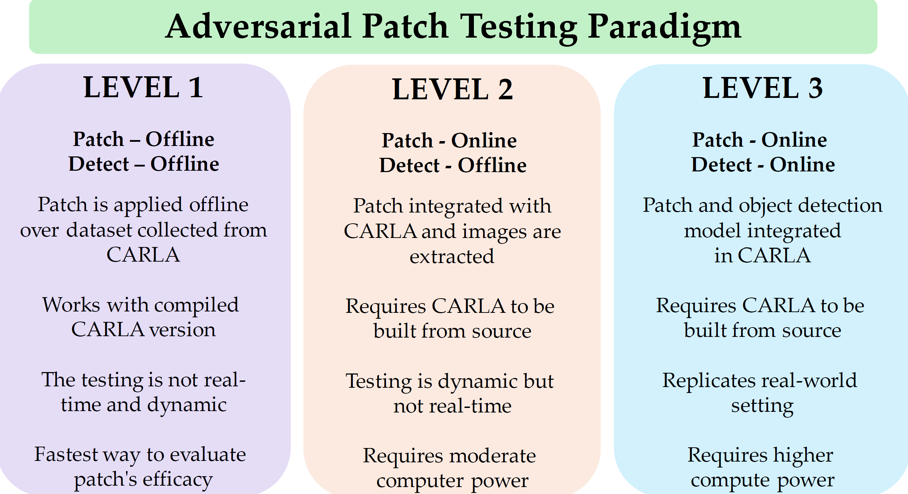

📑 Background
Figure illustrates the adversarial test paradigm levels. Level 1 applies patches offline to image datasets for object detection, dominating existing research but lacking realism. Level 2 introduces more realistic scenarios by analyzing recorded attacked image frames but lacks real-time validation. Level 3 addresses this gap by enabling real-time adversarial testing within simulation environments, crucial for autonomous vehicle evaluation and often overlooked in existing studies.